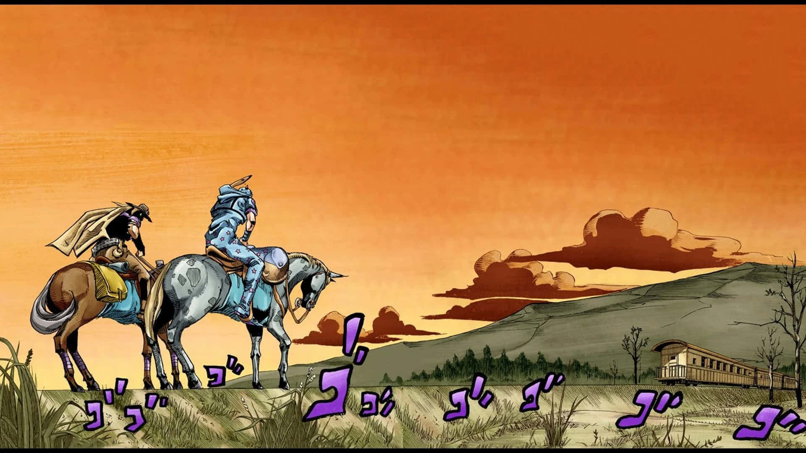
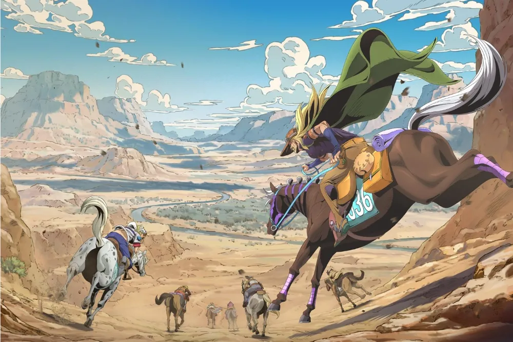
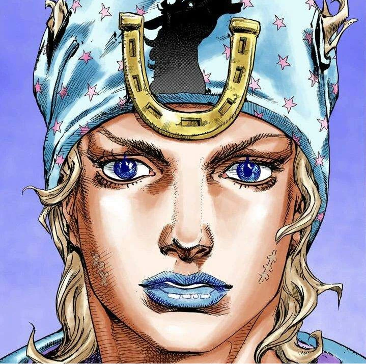
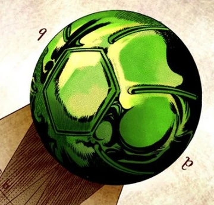
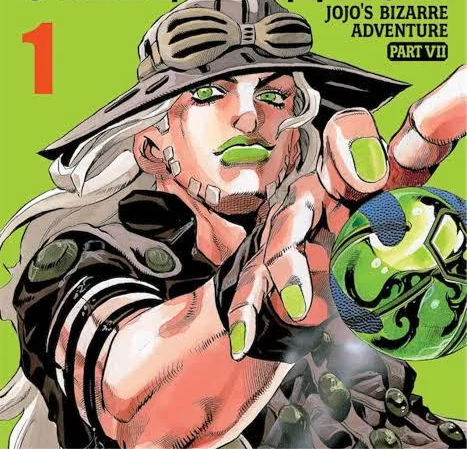
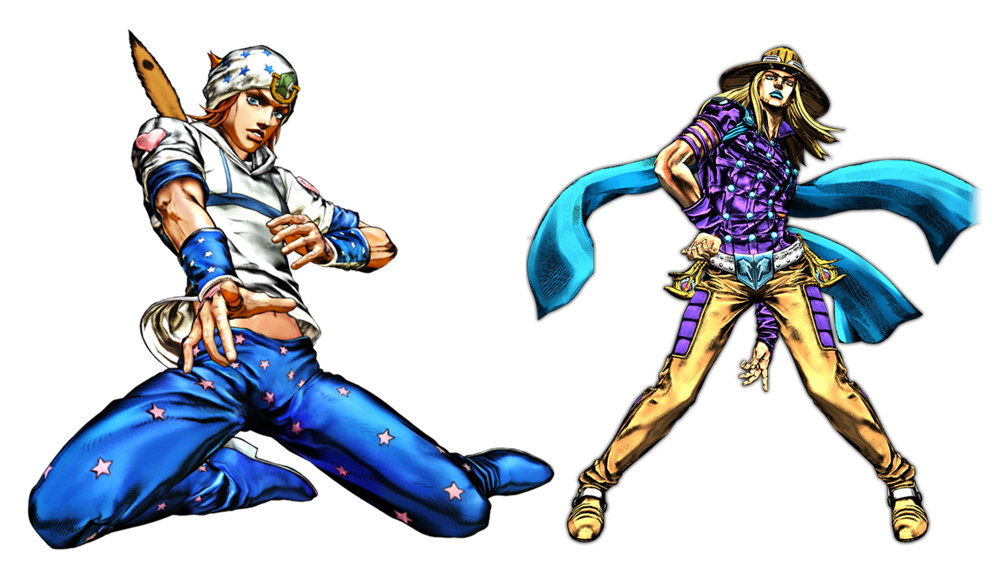

(BACKGROUND)
19세기 미국 대륙 횡단 경주를 배경으로, 광활한 사막과 평원, 도시, 협곡 등 자연과 인간 의지의 대비가 중심 테마다. 끝없는 지평선과 먼지 낀 황야, 붉은 석양 등 서부 개척기의 거친 공간미가 시네마틱하게 표현된다. 단순한 레이스를 넘어, “신체적 이동 = 영혼의 여정”이라는 철학적 의미를 담고 있다.


(SYMBOL)



죠니 죠스타 - 말발굽
그가 과거의 오만과 추락, 그리고 이후의 속죄와 부활을 상징한다. ‘말’은 7부 전체에서 의지와 운명의 매개체인데, 그 발굽이 남긴 상처는 죠니가 고통 속에서 다시 일어선 흔적, 즉 신체적 상처이자 정신적 각성의 표식이다. 시각적으로는 말발굽이 성흔(聖痕, stigmata) 처럼 묘사되어, 종교적 구원과 인간의 성장 테마를 겹쳐 보여준다.
스틸 볼
작품의 중심 개념인 ‘스핀(Spin, 회전)’의 원천이자, 자연의 질서와 인간의 조화를 상징하는 핵심 오브젝트. 단순한 쇠구슬 형태지만, 내부의 회전 원리는 “완벽한 회전(Perfect Rotation)”이라는 우주의 원리와 생명의 리듬을 표현한다. 자이로가 사용하는 스틸 볼은 기술(技) 이자 정신(心) 을 담은 상징물로, 단순한 무기가 아닌 의지와 믿음의 도구로 기능한다.
(FORM)
인체 비율이 사실적으로 돌아오며, 해부학적 정확성과 운동감이 강조된다. 근육과 자세는 서부 영화의 영웅 서사처럼 묘사되고, 회전하는 동작・말의 역동성 등 선형적 리듬감이 조형의 핵심을 이룬다. 의상은 시대복식을 기반으로 하지만, 여전히 패션적 과장과 세부 장식이 남아 있어 현실과 환상이 절묘하게 교차한다.
